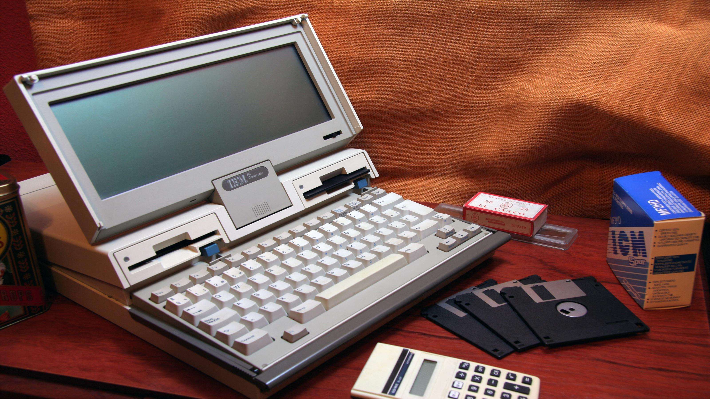

Ingeniero Informático
Estudios
Actualmente curso el Grado en Ingeniería Informática en Sistemas de Información, donde estoy consolidando una base sólida en programación, diseño de software y gestión de sistemas.
Proyectos
TODO Mi proyecto principal en esta etapa es este portfolio personal, pensado para reunir y presentar mi evolución técnica y creativa.
Desde aquí enlazo mi perfil de GitHub para mostrar prácticas, ejercicios y desarrollos académicos en continuo crecimiento.
Tecnologías
- Lenguajes: C, Java, Python y PHP.
- Desarrollo web: HTML, CSS y JavaScript.
- Frameworks y librerías: Django y Keras.
Herramientas
- Entornos de desarrollo: VS Code y PyCharm.
- Control de versiones y contenedores: Git y Docker.
- Productividad y sistema: Obsidian y Linux como entorno de trabajo diario.
Violista Profesional
Formación
- Conservatorio Superior de Música de Badajoz.
- Conservatorio Profesional de Música Cristóbal de Morales.
Repertorio
En mi repertorio solista cabe destacar la Suite n.º 6 para viola de J. S. Bach completa y el primer movimiento del concierto para viola de York Bowen.
Experiencia orquestal
- Orquesta de Extremadura (OEX).
- Orquesta Joven de Extremadura (OJEX).
- Joven Orquesta Barroca de Andalucía (JOBA).
- Orquesta de Castilla y León Joven (OSCyL Joven).
- BISYOC - European Intercultural Youth Orchestra.
Instrumentos
- Viola como instrumento principal.
- Piano y guitarra como instrumentos complementarios.
¿Quién soy?
Soy una persona curiosa y constante, con una forma de ser marcada por la disciplina del mundo scout y por la experiencia de haber hecho dos veces el Camino de Santiago.
En mi tiempo libre disfruto de la lectura, especialmente de autores y sagas como El Señor de los Anillos, Dune y Lovecraft. También me gusta el cine, con especial interés por el estilo de Tarantino.
Me encantan los videojuegos de un jugador, practico algo de natación para mantenerme activo y, por supuesto, nunca digo que no a un buen trozo de chocolate.